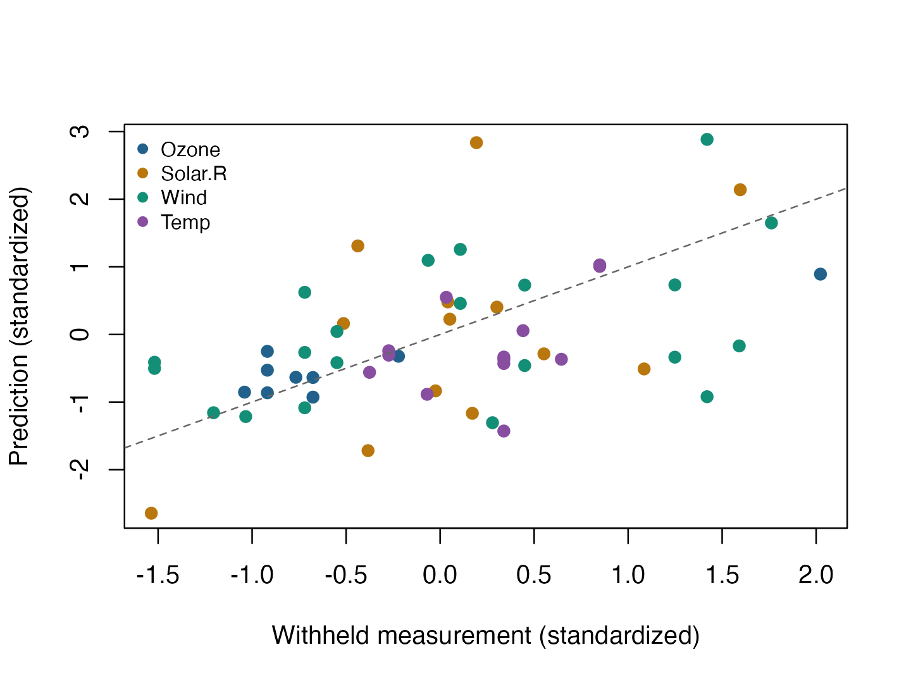

Reconstruct missing environmental measurements
Source:vignettes/articles/example-airquality-completion.Rmd
example-airquality-completion.RmdEnvironmental measurements often contain missing entries and variables with different units. This example treats four measurements as a partially observed matrix and fits a rank-two approximation. A small random subset of the recorded values is withheld so that prediction can be evaluated honestly.
Start with the synthetic
matrix-completion example for the basic workflow. The compact representation guide explains
manifold.fixedrank() and riem.materialize().
Here, the data are noisy and their true rank is unknown, so perfect
reconstruction is not the objective.
Data and a reproducible holdout
R’s airquality
data contain 153 daily observations from New York in May–September
1973. We use ozone (ppb), solar radiation (Langleys), wind (mph), and
maximum temperature (degrees F). Month and day are omitted from this
matrix model. Data provenance and reuse information appear on Data sources and
reproducibility.
Withhold 10% of the observed entries that belong to rows initially containing at least three measurements. Sample these candidates in a seeded random order, accepting an entry only when its row will retain at least two training entries. This preserves minimal information about every row. The holdout is separate from genuinely missing values, for which no prediction error can be measured.
variables <- c("Ozone", "Solar.R", "Wind", "Temp")
measurements <- as.matrix(datasets::airquality[, variables])
observed <- !is.na(measurements)
training <- observed
held_out <- matrix(FALSE, nrow(measurements), ncol(measurements))
eligible <- which(observed & (rowSums(observed) >= 3), arr.ind = TRUE)
target <- floor(0.10 * nrow(eligible))
for (j in sample(seq_len(nrow(eligible)))) {
row <- eligible[j, 1]
column <- eligible[j, 2]
if (sum(training[row, ]) > 2) {
training[row, column] <- FALSE
held_out[row, column] <- TRUE
}
if (sum(held_out) == target) break
}
stopifnot(sum(held_out) == target, all(rowSums(training) >= 2),
!any(training & held_out), all((training | held_out) == observed))
data.frame(training_entries = sum(training), withheld_entries = sum(held_out),
originally_missing = sum(!observed))
#> training_entries withheld_entries originally_missing
#> 1 512 56 44Estimate each column’s mean and standard deviation from training entries only. The centered, scaled training matrix is the input to optimization. Held-out measurements enter only the later assessment.
training_values <- measurements
training_values[!training] <- NA_real_
center <- colMeans(training_values, na.rm = TRUE)
spread <- apply(training_values, 2, sd, na.rm = TRUE)
stopifnot(all(is.finite(spread)), all(spread > 0))
standardized_training <- sweep(sweep(training_values, 2, center, "-"),
2, spread, "/")
indices <- which(training, arr.ind = TRUE)
stopifnot(!anyNA(standardized_training[training]),
all(is.na(standardized_training[!training])))Objective and compact geometry
Write the approximation as , with orthonormal columns in and and a two-by-two core . For training entries , minimize
The penalty discourages large unobserved predictions. Because the outer factors are orthonormal, : the loss needs only selected entries and the small core. The rank and penalty are fixed for this illustration; the holdout is not used to choose them or select a starting point.
n <- nrow(measurements)
p <- ncol(measurements)
lambda <- 0.01
M <- manifold.fixedrank(n, p, 2, representation = "svd")
problem <- riem.problem(
M,
function(x, data) {
residual <- riem.materialize(M, x, data$rows, data$columns) - data$values
residual$square()$mean() / 2 +
x$S$square()$sum() * data$lambda / (2 * data$n * data$p)
},
data = list(rows = indices[, 1], columns = indices[, 2],
values = torch_tensor(standardized_training[training],
dtype = torch_float64(), device = "cpu"),
lambda = lambda, n = n, p = p)
)Registering tensors through data allows the solver to
move them with the optimization point. Initialize by filling unavailable
standardized entries with zero (the training column mean) and retaining
the first two singular components. This is a starting point, not a final
imputation: optimization then fits only the actual training
observations. No holdout values enter the initialization.
filled_training <- standardized_training
filled_training[!training] <- 0
decomposition <- svd(filled_training, nu = 2, nv = 2)
initial <- lapply(list(U = decomposition$u,
S = diag(decomposition$d[1:2]), V = decomposition$v),
torch_tensor, dtype = torch_float64(), device = "cpu")
fit <- riem.optimize(problem, initial, method = "lbfgs", device = "cpu",
control = list(max_iterations = 120, gradient_tolerance = 1e-6))
data.frame(objective = fit$objective, gradient_norm = fit$gradient_norm,
iterations = fit$iterations, termination = fit$termination)
#> objective gradient_norm iterations termination
#> 1 0.08252988 2.195662e-07 39 converged_gradientA maximum-iteration termination is a budget limit, not a convergence certificate. Even a small gradient does not establish a global optimum for this nonconvex problem. A real analysis should also examine other ranks and starts.
Compare predictions with column means
Materialize the fitted matrix once for plots and assessment. Column-mean imputation predicts zero on the standardized scale. We report the aggregate standardized RMSE and separate original-unit errors; adding errors measured in different physical units would be misleading.
reconstructed <- as.matrix(riem.materialize(M, fit$point))
prediction <- sweep(sweep(reconstructed, 2, spread, "*"), 2, center, "+")
baseline <- matrix(rep(center, each = n), nrow = n)
standardized_truth <- sweep(sweep(measurements, 2, center, "-"), 2, spread, "/")
standardized_rmse <- c(
rank_two = sqrt(mean((reconstructed[held_out] - standardized_truth[held_out])^2)),
column_mean = sqrt(mean(standardized_truth[held_out]^2))
)
standardized_rmse
#> rank_two column_mean
#> 0.9740046 0.8641032
original_rmse <- data.frame(
variable = variables, units = c("ppb", "Langleys", "mph", "degrees F"),
withheld = colSums(held_out),
rank_two = vapply(seq_len(p), function(j) {
keep <- held_out[, j]
sqrt(mean((prediction[keep, j] - measurements[keep, j])^2))
}, numeric(1)),
column_mean = vapply(seq_len(p), function(j) {
keep <- held_out[, j]
sqrt(mean((baseline[keep, j] - measurements[keep, j])^2))
}, numeric(1))
)
original_rmse
#> variable units withheld rank_two column_mean
#> 1 Ozone ppb 9 15.580973 33.445406
#> 2 Solar.R Langleys 13 113.248483 68.210482
#> 3 Wind mph 21 3.787715 3.635106
#> 4 Temp degrees F 13 7.121971 4.554797For this seeded split, the rank-two fit improves ozone prediction but has a higher aggregate standardized error than column-mean imputation. A geometric model can capture useful relationships without improving every variable or the overall prediction score.
status <- matrix(0, n, p)
status[training] <- 1
status[held_out] <- 2
old_par <- par(mfrow = c(1, 2), mar = c(5, 4, 3, 1))
image(seq_len(p), seq_len(n), t(status), breaks = c(-0.5, 0.5, 1.5, 2.5),
col = c("#E5E7EB", "#21618C", "#D68910"), axes = FALSE,
xlab = "", ylab = "Day index", main = "Which entries are available?")
axis(1, seq_len(p), variables)
axis(2)
legend("bottom", inset = c(0, -0.32), xpd = NA, horiz = TRUE, bty = "n",
legend = c("Missing", "Training", "Withheld"), cex = 0.75,
fill = c("#E5E7EB", "#21618C", "#D68910"))
image(seq_len(p), seq_len(n), t(reconstructed), col = hcl.colors(60, "Blue-Red 3"),
axes = FALSE, xlab = "", ylab = "Day index", main = "Reconstructed (standardized)")
axis(1, seq_len(p), variables)
axis(2)
Left: training, withheld, and genuinely missing entries. Right: the fitted standardized rank-two matrix.
par(old_par)
plot(standardized_truth[held_out], reconstructed[held_out],
col = c("#21618C", "#B9770E", "#148F77", "#884EA0")[col(held_out)[held_out]],
pch = 19, xlab = "Withheld measurement (standardized)",
ylab = "Prediction (standardized)")
abline(0, 1, lty = 2, col = "grey40")
legend("topleft", variables, col = c("#21618C", "#B9770E", "#148F77", "#884EA0"),
pch = 19, bty = "n", cex = 0.8)
Predictions are assessed only where recorded measurements were withheld.
Independent numerical checks
Recalculate the objective with an ordinary dense R matrix, including the Frobenius penalty. It must agree with the compact implementation. Verify that the point remains on its manifold and that all predictions are finite. These checks do not require the fitted method to outperform column means.
dense_objective <- mean((reconstructed[training] -
standardized_training[training])^2) / 2 +
lambda * sum(reconstructed^2) / (2 * n * p)
objective_error <- abs(dense_objective - fit$objective)
stopifnot(riem.belongs(M, fit$point), all(is.finite(reconstructed)),
all(colSums(held_out) > 0), objective_error < 1e-10,
abs(sum(reconstructed^2) - as.numeric(fit$point$S$square()$sum())) < 1e-8)
data.frame(dense_objective = dense_objective,
compact_objective = fit$objective, absolute_difference = objective_error)
#> dense_objective compact_objective absolute_difference
#> 1 0.08252988 0.08252988 0The random holdout approximates missing-at-random prediction among recorded entries, subject to the row-coverage restriction. Real missingness may follow a different mechanism. Time dependence, nonlinear relationships, and nonnegativity are not modeled; some fitted physical measurements can therefore be implausible. The baseline and held-out errors make these limitations visible.
This article explicitly forces CPU float64 for reproducibility. To use another device, keep the same problem and change the argument below. Automatic selection preserves precision; an unavailable explicitly requested GPU causes an error. See Applications and devices.
# Automatic discovery, or an explicit override:
riem.optimize(problem, initial, method = "lbfgs", device = "auto")
riem.optimize(problem, initial, method = "lbfgs", device = "cpu")
riem.optimize(problem, initial, method = "lbfgs", device = "cuda:0")